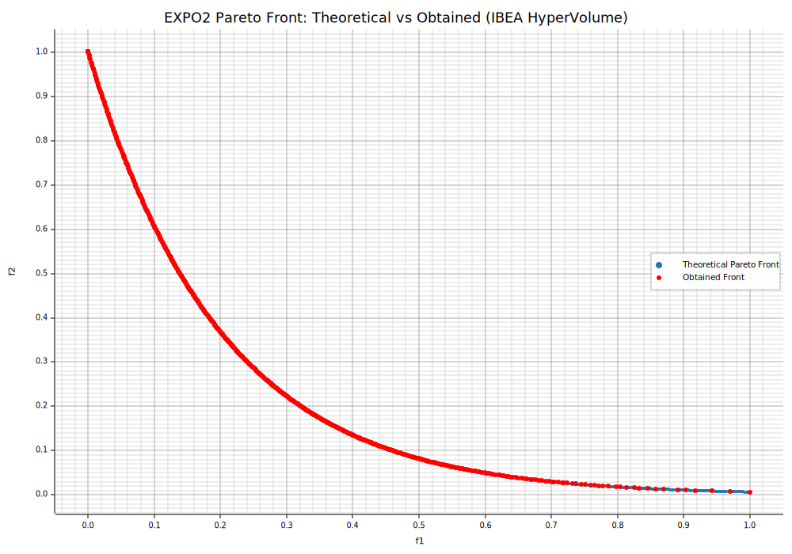

IBEA (Hypervolume-Indicator–Based Evolutionary Algorithm)
IBEA is a multi-objective evolutionary algorithm in which selection pressure is driven entirely by a quality indicator rather than Pareto ranking or density estimators. In the hypervolume-based variant (IBEA-H), fitness values derive from pairwise hypervolume loss contributions, which steers the search to converge toward the Pareto-optimal set while maintaining a well-spread approximation according to the hypervolume indicator.
Following Zitzler & Künzli (2004), fitness is assigned from pairwise indicator values and selection proceeds by iteratively removing the worst individual while updating the fitness of the remaining solutions. Using the hypervolume indicator provides a direct optimization signal aligned with many practical performance measures.
Key Features
- Indicator-Based Fitness Assignment: Instead of nondominated sorting, IBEA computes a fitness value for each individual from pairwise indicator contributions. For IBEA-H, the indicator is derived from hypervolume loss if one solution is removed in favor of another. A common formulation is:
$$ F(x) = \sum_{y \neq x} -\exp\left( -\frac{I(y, x)}{\kappa} \right), $$
where \(I(y, x)\) is a strictly monotone indicator value (here, a function of hypervolume loss when replacing \(x\) by \(y\)), and \(\kappa > 0\) controls selection pressure.
-
Environmental Selection by Iterative Deletion: IBEA forms a candidate set (typically the current population, or parent∪offspring if an elitist pool is used), then repeatedly deletes the worst-metric individual, updating impacted fitness values after each removal, until the target population size is reached. This procedure is elitist by construction, as higher-quality solutions persist.
-
Diversity via the Indicator: Unlike crowding-distance methods, diversity emerges implicitly because hypervolume rewards sets that cover the Pareto front and expand the dominated volume. Regions that enlarge the dominated space receive higher preference.
Implementation in moo-rs
In moo-rs, the IBEA implementation uses the hypervolume indicator as the core quality measure, with an adaptive \(\kappa\) parameter to dynamically adjust selection pressure during evolution. This adaptation helps balance exploration and exploitation across generations.
Normalization of Objectives
Before computing hypervolume contributions, all objective values are normalized to [0,1] using the ideal and nadir points:
- Ideal point: Best observed value for each objective.
- Nadir point: Worst observed value for each objective.
This normalization ensures that objectives are comparable and prevents bias toward any single dimension.
IHD Indicator Based on Hypervolume
The IHD-indicator (Indicator based on Hypervolume Difference) measures the impact of removing or replacing a solution in terms of hypervolume contribution. It is defined as:
Where: - \(IH(S)\) denotes the hypervolume of a set \(S\) with respect to a reference point \(r\). - The hypervolume of a singleton \(\{x\}\) is the Lebesgue measure of the region dominated by \(\{x\}\) and bounded by \(\{r \}\).
Interpretation of Terms
-
IH(x): The hypervolume of the singleton set \(\{x\}\). This is the volume of the hyperrectangle formed between the point \(\{x\}\) and the reference point \(\{r\}\). For a minimization problem with \(m\) objectives: $$ IH(x) = \prod_{i=1}^{m} (r_i - f_i(x)), $$ where \(f_i(x)\) is the \(i\)-th objective value of solution \(x\), and \(r_i\) is the \(i\)-th component of the reference point.
-
\(IH(\{x, y\})\): The hypervolume of the set containing both \(\{x\}\) and \(\{y\}\). This accounts for the union of dominated regions by both points, avoiding double-counting overlapping areas.
Why Reference Point Matters
The reference point \(r\) must be worse than all solutions in every objective dimension. If \(r\) is too close to the Pareto front, extreme solutions will have tiny hypervolume contributions, which biases selection against them. To avoid this, choose \(r\) significantly larger than the normalized range (e.g., \([2, 2, ..., 2]\) after normalization to \([0,1]\)).
Key Idea:
- If \(x\) dominates \(y\), the difference \(IH(y) - IH(x)\) reflects the loss in dominated space when replacing \(x\) with \(y\).
- Otherwise, \(IH(x, y) - IH(x)\) measures the additional hypervolume gained by adding \(y\) to a set already containing \(x\).
EXPO2 Problem
EXPO2 is a two-objective benchmark crafted to produce a smooth, exponentially shaped Pareto front, challenging algorithms to retain good coverage near the extremes where the trade-off is steep.
-
Decision Variables: \(\mathbf{x} = (x_1, \ldots, x_n)\), with \(x_i \in [0, 1]\) for all \(i\); a common setting is \(n = 30\).
-
Objectives (minimization): Let $$ g(\mathbf{x}) = 1 + \frac{9}{n-1} \sum_{i=2}^{n} x_i. $$ Then define $$ f_1(\mathbf{x}) = x_1, \qquad f_2(\mathbf{x}) = g(\mathbf{x})\, \exp!\left(-\frac{5\, x_1}{g(\mathbf{x})}\right). $$
-
Pareto-Optimal Front: Achieved when \(g(\mathbf{x}) = 1\) (i.e., \(x_2 = \cdots = x_n = 0\)), giving $$ f_2 = \exp(-5 f_1), \quad f_1 \in [0, 1], $$ which forms a convex, exponentially decaying front.
-
Key Characteristics:
- Strongly Nonlinear Trade-Off: The front is steep near \(f_1 \approx 0\), stressing exploration of extreme solutions.
- Continuous and Convex: No discontinuities; good for assessing distribution and hypervolume growth.
- Scalable Dimensionality: As \(n\) increases, linkage via \(g(\mathbf{x})\) raises difficulty by coupling objectives with many variables.
:dep ndarray = "*"
:dep moors = "*"
:dep plotters = "0.3.6"
use ndarray::{array, Array2, Axis, Ix2, s};
use moors::{
impl_constraints_fn,
algorithms::IbeaBuilder,
duplicates::CloseDuplicatesCleaner,
operators::{GaussianMutation, RandomSamplingFloat, SimulatedBinaryCrossover},
genetic::Population
};
use plotters::prelude::*;
// ==============================
// EXPO2 — Objective Evaluation
// ==============================
fn evaluate_expo2(genes: &Array2<f64>) -> Array2<f64> {
/// EXPO2 (minimization, 2 objectives).
///
/// g(x) = 1 + (9/(n-1)) * sum_{i=2..n} x_i
/// f1(x) = x1
/// f2(x) = g(x) * exp( -5 * x1 / g(x) )
///
/// Typical domain: x_i in [0, 1], i=1..n (e.g., n = 30).
let n = genes.nrows();
let m = genes.ncols();
if m < 2 {
panic!("EXPO2 requires at least 2 decision variables.");
}
// g(x)
let tail = genes.slice(s![.., 1..]);
let sums = tail.sum_axis(Axis(1));
let g = sums.mapv(|s| 1.0 + (9.0 / ((m as f64) - 1.0)) * s);
let f1 = genes.column(0).to_owned();
let f2 = g.iter().zip(f1.iter()).map(|(gi, &f1i)| gi * (-5.0 * f1i / gi).exp()).collect::<Vec<_>>();
let mut result = Array2::<f64>::zeros((n, 2));
result.column_mut(0).assign(&f1);
result.column_mut(1).assign(&Array2::from_shape_vec((n, 1), f2).unwrap().column(0));
result
}
// ==========================================
// Theoretical Front (g=1 => x2..xn = 0; f2=exp(-5 f1))
// ==========================================
// Returns (f1, f2) arrays of the EXPO2 Pareto front:
// f1 in [0, 1], f2 = exp(-5 f1)
fn expo2_theoretical_front(num_points: usize) -> (Vec<f64>, Vec<f64>) {
let mut f1_theo = Vec::with_capacity(num_points);
let mut f2_theo = Vec::with_capacity(num_points);
for i in 0..num_points {
let t = if num_points <= 1 { 0.0 } else { i as f64 / (num_points as f64 - 1.0) };
f1_theo.push(t);
f2_theo.push((-5.0 * t).exp());
}
(f1_theo, f2_theo)
}
// =============================
// Algorithm Setup (IBEA-H)
// =============================
// Problem dimensionality
impl_constraints_fn!(BoundConstraints, lower_bound = 0.0, upper_bound = 1.0);
let population: Population<Ix2, Ix2> = {
let num_vars: usize = 30;
// Hypervolume reference point (minimization ⇒ worse-than-worst)
// We put [4.0, 4.0] far from the normalized range [0,1]
let hv_reference = array![4.0, 4.0];
// kappa controls the selection pressure in IBEA
let kappa = 0.05;
let mut algorithm = IbeaBuilder::default()
.sampler(RandomSamplingFloat::new(0.0, 1.0))
.crossover(SimulatedBinaryCrossover::new(15.0))
.mutation(GaussianMutation::new(0.1, 0.1))
.reference(hv_reference.clone()) // clone because we will plot it later
.kappa(kappa)
.duplicates_cleaner(CloseDuplicatesCleaner::new(1e-6))
.fitness_fn(evaluate_expo2)
.constraints_fn(BoundConstraints)
.num_vars(num_vars)
.population_size(600)
.num_offsprings(600)
.num_iterations(600)
.mutation_rate(0.2)
.crossover_rate(0.9)
.keep_infeasible(false)
.verbose(false)
.seed(1)
.build()
.expect("Failed to build IBEA");
// ===============
// Run IBEA
// ===============
algorithm.run().expect("IBEA run failed");
algorithm.population.unwrap().clone()
};
// Best front (Population)
let fitness = population.fitness;
let f1_found: Vec<f64> = fitness.column(0).to_vec();
let f2_found: Vec<f64> = fitness.column(1).to_vec();
let (f1_theo, f2_theo) = expo2_theoretical_front(400);
// Plot the theoretical Pareto front, obtained front, and reference points
let mut svg = String::new();
{
let backend = SVGBackend::with_string(&mut svg, (1000, 700));
let root = backend.into_drawing_area();
root.fill(&WHITE).unwrap();
let (mut x_min, mut x_max) = (f1_theo[0], f1_theo[0]);
let (mut y_min, mut y_max) = (f2_theo[0], f2_theo[0]);
for &x in f1_theo.iter().chain(f1_found.iter()) {
if x < x_min { x_min = x; }
if x > x_max { x_max = x; }
}
for &y in f2_theo.iter().chain(f2_found.iter()) {
if y < y_min { y_min = y; }
if y > y_max { y_max = y; }
}
let xr = (x_max - x_min).max(1e-9);
let yr = (y_max - y_min).max(1e-9);
x_min -= xr * 0.05;
x_max += xr * 0.05;
y_min -= yr * 0.05;
y_max += yr * 0.05;
let mut chart = ChartBuilder::on(&root)
.caption("EXPO2 Pareto Front: Theoretical vs Obtained (IBEA HyperVolume)", ("DejaVu Sans", 22))
.margin(10)
.x_label_area_size(40)
.y_label_area_size(60)
.build_cartesian_2d(x_min..x_max, y_min..y_max)
.unwrap();
chart.configure_mesh()
.x_desc("f1")
.y_desc("f2")
.axis_desc_style(("DejaVu Sans", 14))
.light_line_style(&RGBColor(220, 220, 220))
.draw()
.unwrap();
chart.draw_series(
f1_theo.iter().zip(f2_theo.iter()).map(|(&x, &y)| {
Circle::new((x, y), 2, RGBColor(31, 119, 180).filled())
})
).unwrap()
.label("Theoretical Pareto Front")
.legend(|(x, y)| Circle::new((x, y), 4, RGBColor(31, 119, 180).filled()));
chart.draw_series(
f1_found.iter().zip(f2_found.iter()).map(|(&x, &y)| {
Circle::new((x, y), 3, RGBColor(255, 0, 0).filled())
})
).unwrap()
.label("Obtained Front")
.legend(|(x, y)| Circle::new((x, y), 3, RGBColor(255, 0, 0).filled()));
chart.configure_series_labels()
.border_style(&RGBAColor(0, 0, 0, 0.3))
.background_style(&WHITE.mix(0.9))
.label_font(("DejaVu Sans", 13))
.draw()
.unwrap();
root.present().unwrap();
}
println!("EVCXR_BEGIN_CONTENT image/svg+xml\n{}\nEVCXR_END_CONTENT", svg);

import numpy as np
import matplotlib.pyplot as plt
from pymoors import (
Ibea,
RandomSamplingFloat,
GaussianMutation,
SimulatedBinaryCrossover,
CloseDuplicatesCleaner,
Constraints,
)
from pymoors.schemas import Population
from pymoors.typing import TwoDArray
# ==============================
# EXPO2 — Objective Evaluation
# ==============================
def evaluate_expo2(x: TwoDArray) -> TwoDArray:
"""
EXPO2 (minimization, 2 objectives).
g(x) = 1 + (9/(n-1)) * sum_{i=2..n} x_i
f1(x) = x1
f2(x) = g(x) * exp( -5 * x1 / g(x) )
Typical domain: x_i in [0, 1], i=1..n (e.g., n = 30).
"""
n = x.shape[1]
if n < 2:
raise ValueError("EXPO2 requires at least 2 decision variables.")
# g(x)
g = 1.0 + (9.0 / (n - 1)) * np.sum(x[:, 1:], axis=1)
f1 = x[:, 0]
f2 = g * np.exp(-5.0 * x[:, 0] / g)
return np.column_stack((f1, f2))
# ==========================================
# Theoretical Front (g=1 => x2..xn = 0; f2=exp(-5 f1))
# ==========================================
def expo2_theoretical_front(num_points: int = 200):
"""
Returns (f1, f2) arrays of the EXPO2 Pareto front:
f1 in [0, 1], f2 = exp(-5 f1)
"""
f1 = np.linspace(0.0, 1.0, num_points)
f2 = np.exp(-5.0 * f1)
return f1, f2
# =============================
# Algorithm Setup (IBEA-H)
# =============================
# Problem dimensionality
NUM_VARS = 30
# Hypervolume reference point (minimization ⇒ worse-than-worst)
# We put [6.0, 6.0] far from the normalized range [0,1]
HV_REFERENCE_POINT = np.array([4.0, 4.0], dtype=float)
# kappa controls the selection pressure in IBEA
KAPPA = 0.05
algorithm = Ibea(
sampler=RandomSamplingFloat(min=0.0, max=1.0),
crossover=SimulatedBinaryCrossover(distribution_index=15),
mutation=GaussianMutation(gene_mutation_rate=0.1, sigma=0.1),
fitness_fn=evaluate_expo2,
constraints_fn=Constraints(lower_bound=0.0, upper_bound=1.0),
duplicates_cleaner=CloseDuplicatesCleaner(epsilon=1e-6),
num_vars=NUM_VARS,
population_size=600,
num_offsprings=600,
num_iterations=600,
mutation_rate=0.2,
crossover_rate=0.9,
keep_infeasible=False,
reference_points=HV_REFERENCE_POINT,
kappa=KAPPA,
verbose=False,
seed=1,
)
# ===============
# Run IBEA
# ===============
algorithm.run()
# Best front (Population)
best: Population = algorithm.population.best_as_population
obtained = best.fitness # shape: (num_solutions, 2)
f1_theo, f2_theo = expo2_theoretical_front(num_points=400)
# Plot the theoretical Pareto front, obtained front, and reference points
plt.figure(figsize=(10, 6))
plt.plot(f1_theo, f2_theo, "k-", linewidth=2, label="Theoretical Pareto Front")
plt.scatter(
obtained[:, 0],
obtained[:, 1],
c="r",
marker="o",
label="Obtained Front",
)
plt.xlabel("$f_1$", fontsize=14)
plt.ylabel("$f_2$", fontsize=14)
plt.title("EXPO2 Pareto Front: Theoretical vs Obtained (IBEA HyperVolume)", fontsize=16)
plt.legend()
plt.grid(True)
plt.show()

References
- Zitzler, E., & Künzli, S. (2004). Indicator-Based Selection in Multiobjective Search. In PPSN VIII (LNCS 3242, pp. 832–842). Springer.
- Zitzler, E., Thiele, L., Laumanns, M., Fonseca, C. M., & da Fonseca, V. G. (2003). Performance Assessment of Multiobjective Optimizers: An Analysis and Review. TEO/ETH Technical Report 139. (Introduces the hypervolume indicator as a robust performance measure.)
- While various IBEA variants exist (e.g., using the additive \(\varepsilon\)-indicator), this document focuses on the hypervolume-based instantiation commonly used in practice.